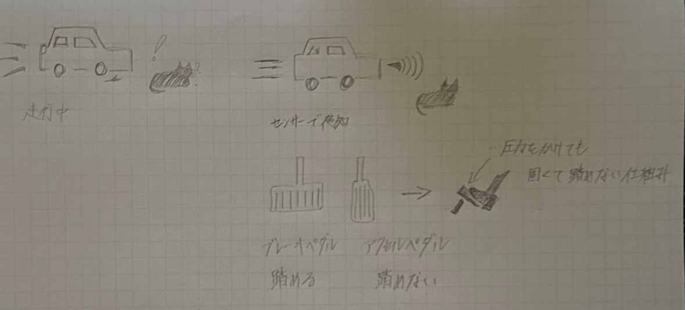

𝐴𝑠𝑠𝑖𝑔𝑛𝑚𝑒𝑛𝑡:
ビジネスを通して解決したい課題
夏休みにいろいろと世の中を観察し、社会に存在する大小様々な課題を発見し、ビジネスを通して解決したい課題を考えて、
各人スケッチを書く
アクセルとブレーキの踏み間違え防止
ニュースでは高齢者の踏み間違えが問題視されているが、私たち20代が多いことが分かった。
そこで、今どちらを踏むべきなのかをお知らせしてくれる装置があれば事故を防止できるのではないだろうか。
障害物をセンサーで感知し、自動でアクセルペダルを踏めないようにする。ブレーキペダルのみ稼働する仕組み。
